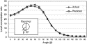

")


 E-mail Article
E-mail Article Cited By
Cited By") Citation Feed
Citation Feed Export Citation
Export Citation Add to my Quick Links
Add to my Quick Links


Copyright © 2001 Elsevier Science Ltd. All rights reserved.

Department of Mechanical and Marine Engineering, Higher Technical Institute, PO Box 20423, Nicosia 2152, Cyprus
Received 23 March 2001;
Abstract
Artificial neural networks are widely accepted as a technology offering an alternative way to tackle complex and ill-defined problems. They can learn from examples, are fault tolerant in the sense that they are able to handle noisy and incomplete data, are able to deal with non-linear problems and, once trained, can perform prediction and generalisation at high speed. They have been used in diverse applications in control, robotics, pattern recognition, forecasting, medicine, power systems, manufacturing, optimisation, signal processing and social/psychological sciences. They are particularly useful in system modelling such as in implementing complex mappings and system identification. This paper presents various applications of neural networks mainly in renewable energy problems in a thematic rather than a chronological or any other order. Artificial neural networks have been used by the author in the field of solar energy; for modelling and design of a solar steam generating plant, for the estimation of a parabolic trough collector intercept factor and local concentration ratio and for the modelling and performance prediction of solar water heating systems. They have also been used for the estimation of heating loads of buildings, for the prediction of air flow in a naturally ventilated test room and for the prediction of the energy consumption of a passive solar building. In all those models a multiple hidden layer architecture has been used. Errors reported in these models are well within acceptable limits, which clearly suggest that artificial neural networks can be used for modelling in other fields of renewable energy production and use. The work of other researchers in the field of renewable energy and other energy systems is also reported. This includes the use of artificial neural networks in solar radiation and wind speed prediction, photovoltaic systems, building services systems and load forecasting and prediction.
Article Outline
- 1. Introduction
- 2. Artificial neural networks
- 2.1. Biological and artificial neurons
- 2.2. Artificial neural network principles
- 2.3. Network parameters selection
- 3. Applications of ANNs in renewable energy systems
- 3.1. Modelling of a solar steam generator
- 3.1.1. Intercept factor
- 3.1.2. Local concentration ratios
- 3.1.3. Starting-up of the solar steam generating plant
- 3.1.4. Mean monthly average steam production
- 3.2. Solar water heating systems
- 3.2.1. Modelling of solar domestic water heating (SDHW) systems
- 3.2.2. Performance prediction of a thermosyphon solar domestic water heating system.
- 3.2.3. Solar domestic water heating systems: long-term performance prediction
- 3.2.4. Thermosyphon system: long-term performance prediction using the dynamic system testing method and ANNs
- 3.2.5. Identification of the time parameters of solar collectors
- 3.3. Photovoltaic systems
- 3.4. Solar radiation and wind speed prediction
- 4. Applications of ANNs in other energy systems
- 4.1. Building services systems
- 4.1.1. Building thermal load
- 4.1.2. Predicting air flow in a naturally ventilated test room
- 4.1.3. Prediction of the energy consumption of a passive solar building
- 4.1.4. Energy prediction
- 4.1.5. Energy consumption optimisation
- 4.1.6. Evaluation of building energy consumption
- 4.1.7. Model of room storage heater
- 4.2. Forecasting and prediction
- 5. Conclusions
- References
1. Introduction
The possibility of developing a machine that would “think” has intrigued human beings since ancient times. In 1637 the French philosopher-mathematician Rene Descartes predicted that it would never be possible to make a machine that thinks as humans do. However, in 1950, the British mathematician and computer pioneer Alan Turing declared that one day there would be a machine that could duplicate human intelligence in every way.
Artificial intelligence (AI) is a term that in its broadest sense would indicate the ability of a machine or artifact to perform the same kinds of functions that characterise human thought. The term AI has also been applied to computer systems and programs capable of performing tasks more complex than straightforward programming, although still far from the realm of actual thought.
It should be noted that solving a computation does not indicate understanding, something a person who solved a problem would have. Human reasoning is not based solely on rules of logic. It involves perception, awareness, emotional preferences, values, evaluating experience, the ability to generalise and weigh options, and many more.
Machinery can outperform humans physically. Similarly, computers can outperform mental functions in limited areas, notably in the speed of mathematical calculations. For example, the fastest computers developed are able to perform roughly 10 billion calculations per second. But making more powerful computers will probably not be the way to create a machine capable of thinking. Computer programs operate according to set procedures, or logic steps, called algorithms. In addition, most computers do serial processing such as operations of recognition and computations are performed one at a time. The brain works in a manner called parallel processing, performing a number of operations simultaneously. To achieve simulated parallel processing, some supercomputers have been made with multiple processors to follow several algorithms at the same time.
Artificial intelligence consists of two branches—expert systems and artificial neural networks. Logic programs called expert systems allow computers to “make decisions” by interpreting data and selecting from among alternatives. Expert systems take computers a step beyond straightforward programming, being based on a technique called rule-based inference, in which pre-established rule systems are used to process the data. Despite their sophistication, systems still do not approach the complexity of true intelligent thought.
Artificial neural networks (ANNs) are collections of small individual interconnected processing units. Information is passed between these units along interconnections. An incoming connection has two values associated with it, an input value and a weight. The output of the unit is a function of the summed value. ANNs while implemented on computers are not programmed to perform specific tasks. Instead, they are trained with respect to data sets until they learn the patterns presented to them. Once they are trained, new patterns may be presented to them for prediction or classification.
For the estimation of the flow of energy and the performance of renewable energy systems, analytical computer codes are often used. The algorithms employed are usually complicated, involving the solution of complex differential equations. These programs usually require a large amount of computer power and need a considerable amount of time to give accurate predictions. Instead of complex rules and mathematical routines, artificial neural networks are able to learn the key information patterns within a multidimensional information domain. In addition, neural networks are fault tolerant, robust, and noise immune [1]. Data from renewable energy systems, being inherently noisy, are good candidate problems to be handled with neural networks.
The objective of this paper is to present various applications of neural networks in renewable energy problems. The problems are presented in a thematic rather than a chronological or any other order. This will show the capability of artificial neural networks as tools in renewable energy systems prediction and modelling.
2. Artificial neural networks
During the past 15 years there has been a substantial increase in the interest on artificial neural networks. The ANNs are good for some tasks while lacking in some others. Specifically, they are good for tasks involving incomplete data sets, fuzzy or incomplete information, and for highly complex and ill-defined problems, where humans usually decide on an intuitional basis. They can learn from examples, and are able to deal with non-linear problems. Furthermore, they exhibit robustness and fault tolerance. The tasks that ANNs cannot handle effectively are those requiring high accuracy and precision, as in logic and arithmetic. ANNs have been applied successfully in a number of application areas. Some of the most important ones are:
1. Function approximation. Mapping of a multiple input to a single output is established. Unlike most statistical techniques, this can be done with adaptive model-free estimation of parameters.
2. Pattern association and pattern recognition. This is a problem of pattern classification. ANNs can be effectively used to solve difficult problems in this field, for instance in sound, image, or video recognition. This task can even be made without an a priori definition of the pattern. In such cases the network learns to identify totally new patterns.
3. Associative memories. This is the problem of recalling a pattern when given only a subset clue. In such applications the network structures used are usually complicated, composed of many interacting dynamical neurons.
4. Generation of new meaningful patterns. This general field of application is relatively new. Some claims are made that suitable neuronal structures can exhibit rudimentary elements of creativity.
ANNs have been applied successfully in a various fields of mathematics, engineering, medicine, economics, meteorology, psychology, neurology, and many others. Some of the most important ones are in pattern, sound and speech recognition, in the analysis of electromyographs and other medical signatures, in the identification of military targets and in the identification of explosives in passenger suitcases. They have also being used in weather and market trends forecasting, in the prediction of mineral exploration sites, in electrical and thermal load prediction, and in adaptive and robotic control. Neural networks are used for process control because they can build predictive models of the process from multidimensional data routinely collected from sensors.
2.1. Biological and artificial neurons
A biological neuron is shown in Fig. 1. In the brain there is a flow of coded information (using electrochemical media, the so-called neurotransmitters) from the synapses towards the axon. The axon of each neuron transmits information to a number of other neurons. The neuron receives information at the synapses from a large number of other neurons. It is estimated that each neuron may receive stimuli from as many as 10,000 other neurons. Groups of neurons are organised into subsystems and the integration of these subsystems forms the brain. It is estimated that the human brain has around 100 billion interconnected neurons.
Fig. 2 shows a highly simplified model of an artificial neuron, which may be used to stimulate some important aspects of the real biological neuron. An ANN is a group of interconnected artificial neurons, interacting with one another in a concerted manner. In such a system, excitation is applied to the input of the network. Following some suitable operation, it results in a desired output. At the synapses, there is an accumulation of some potential, which in the case of the artificial neurons is modelled as a connection weight. These weights are continuously modified, based on suitable learning rules.
2.2. Artificial neural network principles
According to Haykin [2] a neural network is a massively parallel distributed processor that has a natural propensity for storing experiential knowledge and making it available for use. It resembles the human brain in two respects; the knowledge is acquired by the network through a learning process, and interneuron connection strengths known as synaptic weights are used to store the knowledge.
ANN models may be used as an alternative method in engineering analysis and predictions. ANNs mimic somewhat the learning processes of a human brain. They operate like a “black box” model, requiring no detailed information about the system. Instead, they learn the relationship between the input parameters and the controlled and uncontrolled variables by studying previously recorded data, similar to the way a non-linear regression might perform. Another advantage of using ANNs is their ability to handle large and complex systems with many interrelated parameters. They seem to simply ignore excess data that are of minimal significance and concentrate instead on the more important inputs.
A schematic diagram of a typical multilayer feedforward neural network architecture is shown in Fig. 3. The network usually consists of an input layer, some hidden layers and an output layer. In its simple form, each single neuron is connected to other neurons of a previous layer through adaptable synaptic weights. Knowledge is usually stored as a set of connection weights (presumably corresponding to synapse efficacy in biological neural systems). Training is the process of modifying the connection weights in some orderly fashion using a suitable learning method. The network uses a learning mode, in which an input is presented to the network along with the desired output and the weights are adjusted so that the network attempts to produce the desired output. The weights after training contain meaningful information whereas before training they are random and have no meaning.
Fig. 4 illustrates how information is processed through a single node. The node receives weighted activation of other nodes through its incoming connections. First, these are added up (summation). The result is then passed through an activation function, the outcome is the activation of the node. For each of the outgoing connections, this activation value is multiplied by the specific weight and transferred to the next node.
A training set is a group of matched input and output patterns used for training the network, usually by suitable adaptation of the synaptic weights. The outputs are the dependent variables that the network produces for the corresponding input. It is important that all the information the network needs to learn is supplied to the network as a data set. When each pattern is read, the network uses the input data to produce an output, which is then compared to the training pattern, i.e. the correct or desired output. If there is a difference, the connection weights (usually but not always) are altered in such a direction that the error is decreased. After the network has run through all the input patterns, if the error is still greater than the maximum desired tolerance, the ANN runs again through all the input patterns repeatedly until all the errors are within the required tolerance. When the training reaches a satisfactory level, the network holds the weights constant and uses the trained network to make decisions, identify patterns, or define associations in new input data sets not used to train it.
By learning, it is meant that the system adapts (usually by changing suitable controllable parameters) in a specified manner so that some parts of the system suggest a meaningful behaviour, projected as output. The controllable parameters have different names such as synaptic weights, synaptic efficancies, free parameters and others.
The classical view of learning is well interpreted and documented in approximation theories. In these, learning may be interpreted as finding a suitable hypersurface that fits known input/output data points in such a manner that the mapping is acceptably accurate. Such a mapping is usually accomplished by employing simple non-linear functions that are used to compose the required function [3].
A more general approach of learning is adopted by Haykin [2], in which learning is a process by which the free parameters of a neural network are adapted through a continuing process of simulation by the environment in which the network is embedded. The type of learning is determined by the manner in which the parameter changes take place.
An even more general approach is suggested by Neocleous [4], in which learning is achieved through any change, in any characteristic of a network, so that meaningful results are achieved. Thus learning could be achieved, for example, through synaptic weight modification, network structure modifications, through appropriate choice of activation functions and others. A procedure for choosing the appropriate network parameters to facilitate learning is presented in Section 2.3.
By meaningful results it is meant that a desired objective is met with a satisfactory degree of success. The objective is usually quantified by a suitable criterion or cost function. It is usually a process of minimising an error function or maximising a benefit function. In this respect, learning resembles optimisation.
The most popular learning algorithms are the back-propagation (BP) algorithm and its variants [1 and 5]. The BP algorithm is one of the most powerful learning algorithms in neural networks. The training of all patterns of a training data set is called an epoch. The training set has to be a representative collection of input–output examples. Back-propagation training is a gradient descent algorithm. It tries to improve the performance of the neural network by reducing the total error by changing the weights along its gradient. The error is expressed by the root-mean-square (RMS) value, which can be calculated by:
For a node in a hidden layer:
In the latter expression, the subscript k indicates a summation over all nodes in the downstream layer (the layer in the direction of the output layer). The subscript j indicates the weight position in each node. Finally, the δ and α terms for each node are used to compute an incremental change to each weight term via:
The term is referred to as the learning rate and determines the size of the weight adjustments during each training iteration. The term m is called the momentum factor. It is applied to the weight change used in the previous training iteration, wij(old). Both of these constant terms are specified at the start of the training cycle and determine the speed and stability of the network.
2.3. Network parameters selection
While most scholars are concerned with the techniques to define artificial neural network architecture, practitioners want to apply the ANN architecture to the model and obtain quick results. The neural network architecture refers to the arrangement of neurons into layers and the connection patterns between layers, activation functions and learning methods. The neural network model and the architecture of a neural network determine how a network transforms its input into an output. This transformation is in fact a computation. Often the success depends upon a clear understanding of the problem regardless of the network architecture. However, in determining which neural network architecture provides the best prediction it is necessary to build a good model. It is essential to be able to identify the most important variables in a process and generate best-fit models. How to identify and define the best model it is very controversial.
Although there are differences between traditional approaches and neural networks, both methods require preparing the model. The classical approach is based on the precise definition of the problem domain as well as the identification of a mathematical function or functions to describe it. It is, however, very difficult to identify an accurate mathematical function when the system is non-linear and there are parameters that vary with time due to several factors. The control program often lacks the capability to adapt to the parameter changes. Neural networks are used to learn the behaviour of the system and are subsequently used to simulate and predict the behaviour of the system. In defining the neural network model, first the process and the process control constrains have to be understood and identified. Then the model is defined and validated.
When using a neural network for prediction, the following steps are crucial. First, a neural network needs to be built to model the behaviour of the process. The values of the output are predicted on the basis of the model. Second, based on the neural network model obtained on the first phase, the output of the model is simulated using different scenarios. Third, the control variables are modified to control and optimise the output.
When building the neural network model the process has to be identified with respect to the input and output variables that characterise the process. The inputs include measurements of the physical dimensions, measurements of the variables specific to the environment, equipment, and controlled variables modified by the operator. Variables that do not have any effect on the variation of the measured output are discarded. These are estimated by the contribution factors of the various input parameters. These factors indicate the contribution of each input parameter to the learning of the neural network and are usually estimated by the network, depending on the software employed.
The selection of training data has a vital role in the performance and convergence of the neural network model. An analysis of historical data for identification of variables that are important to the process is important. Plotting graphs to check whether the charts of the various variables reflect what is known about the process for operating experience and for discovery of errors in data is very helpful.
The input and output values are normalised. All input and output values are usually scaled individually such that the overall variance in the data set is maximised. This is necessary as it leads to faster learning. The scaling used is either in the range −1 to 1 or in the range 0 to 1 depending on the type of data and the activation function used.
The basic operation that has to be followed to successfully handle a problem with ANNs is to select the appropriate architecture and the suitable learning rate, the momentum, the number of neurons in each hidden layer and the activation function. The procedure for finding the best architecture and the other network parameters is shown graphically in Fig. 5. This is a laborious and time-consuming method but as experience is gathered, some parameters can be predicted easily, thus shortening tremendously the time required.
The first step is to collect the required data and prepare them in a spreadsheet format with various columns representing the input and output parameters. If a large number of sequences/patterns are available in the input data file and to avoid long training times, a smaller training file may be created to select the required parameters and use the complete data set for the final training.
Three types of data files are required; a training data file, a test data file and a validation data file. The former and the latter should contain representative samples of all the cases the network is required to handle, whereas the test file may contain about 10% of the cases contained in the training file.
During training the network is tested against the test file to determine accuracy and training should be stopped when the mean average error remains unchanged for a number of epochs.
This is done in order to avoid overtraining, in which case the network learns perfectly the training patterns but is unable to make predictions when an unknown training set is presented to it.
In back-propagation networks, the number of hidden neurons determines how well a problem can be learned. If too many are used, the network will tend to try to memorise the problem, and thus not generalise well later. If too few are used, the network will generalise well but may not have enough “power” to learn the patterns well. Getting the right number of hidden neurons is a matter of trial and error, since there is no science to it. In general, the number of hidden neurons may be estimated by applying the following empirical formula:
3. Applications of ANNs in renewable energy systems
ANNs have been used by various researchers and by the author for modelling and predictions in the field of renewable energy systems. This paper presents various such applications in a thematic rather than a chronological or any other order. More details are given on the most recent work of the author in the area.
3.1. Modelling of a solar steam generator
ANNs have been applied to model various aspects of a solar steam generator. The system employs a parabolic trough collector, a flash vessel, a high-pressure circulating pump and the associated pipework as shown in Fig. 6. Some of the work done on this system is described below.
3.1.1. Intercept factor
A comparative study of various methods employed to estimate the collector intercept factor is detailed by Kalogirou et al. [6]. The intercept factor is defined as the ratio of the energy absorbed by the receiver to the energy incident on the concentrator aperture. From the intercept factor the collector optical efficiency can be determined. This is a very important parameter in the determination of the overall effectiveness of solar concentrating collectors. ANNs have been able to calculate the intercept factor with a difference confined to a less than 0.4% as compared to the much more complex estimation of the Energy DEPosition (EDEP) computer code. Comparative results are shown in Fig. 7. Multiple linear regression (MLR) was also tried and the results are also shown in Fig. 7.
| Full-size image (4K) |
Fig. 7. Differences in predicted values of intercept factor and the values given by ANN and MLR methods.
3.1.2. Local concentration ratios
The radiation profile on the receiver of the collector has a “bell”-type shape. This is represented in terms of the local concentration ratios at 10° intervals on the periphery of the receiver. It is very important to be able to measure this profile because in this way the collector optical efficiency can be determined. This measurement must be carried out at various incidence angles and also at the normal incidence angle (θ=0°). This is usually very difficult to perform due to the size of the collector. ANNs have been used to learn the radiation profile from readings at angles that experiments could be performed and make prediction for the other angles including the normal incidence angle [7]. The predictions of ANNs compared to the experimental values have a maximum difference of 3.2%, which is considered satisfactory. Comparative results for the normal incidence angle (θ=0°) are shown in Fig. 8.
|  | Full-size image (6K) |
Fig. 8. Comparison of predicted and actual LCR values at the normal incidence angle at various positions on the periphery of the receiver indicated by angle β.
3.1.3. Starting-up of the solar steam generating plant
ANNs have also been used to model the starting-up of a solar steam generator [8]. It is very important for the designer of such systems to be able to make such predictions because the energy spent during starting-up in the morning has a significant effect on the system performance. It should be noted that this energy is lost due to the diurnal cycle of the sun and the resulting cooling down of the system during the night. This problem is very difficult to handle with analytical methods as the system operates under transient conditions. ANNs could predict the profile of the temperatures at various points of the system, as shown in Table 1, to within 3.9%, which is considered adequate for design purposes. From the profiles of two sets of flash vessel top and bottom temperatures versus time, the energy invested during the heat-up period can be easily estimated.
Table 1. Statistical analysis of program predictions and the resulting maximum percentage error
3.1.4. Mean monthly average steam production
An important parameter required for the design of such systems is the mean monthly average steam production of the system. A network was trained with performance values for a number of collector sizes ranging from 3.5 to 2160 m2 and was able to make predictions both within and outside the training range [9]. A neural network was able to predict the mean monthly average steam production of the system as shown in Fig. 9 with a maximum difference confined to less than 5.1% as compared to simulated values, which is considered acceptable. The matching of the predicted and actual values in each case is excellent. In fact, the pairs of two lines, shown in Fig. 9, are almost indistinguishable.
| Full-size image (6K) |
Fig. 9. Comparison of predicted and actual (simulated) results for different collector areas.
3.2. Solar water heating systems
3.2.1. Modelling of solar domestic water heating (SDHW) systems
An ANN has been trained based on 30 known cases of systems, varying from collector areas between 1.81 and 4.38 m2 [10]. Open and closed systems have been considered both with horizontal and vertical storage tanks. In addition to the above, an attempt was made to consider a large variety of weather conditions. In this way the network was trained to accept and handle a number of unusual cases. The data presented as input were the collector area, storage tank heat loss coefficient (U-value), tank type, storage volume, type of system, and 10 readings from real experiments of total daily solar radiation, mean ambient air temperature, and the water temperature in the storage tank at the beginning of a day. The network output is the useful energy extracted from the system and the stored water temperature rise. Unknown data were used to investigate the accuracy of prediction. Typical results are shown in Table 2 and Table 3 for the useful energy extracted from the system and the stored water temperature rise respectively. These include systems considered for the training of the network at different weather conditions (systems 11 and 12) and completely unknown systems (systems 15, 32 and 43). Predictions within 7.1% and 9.7% were obtained respectively [10]. It should be noted that the cases shown in Table 2 and Table 3 are specifically selected to show the range of accuracy obtained and in particular the minimum and maximum deviations. These results indicate that the proposed method can successfully be used for the estimation of the useful energy extracted from the system and the stored water temperature rise. The advantages of this approach compared to the conventional algorithmic methods are the speed, the simplicity, and the capacity of the network to learn from examples. This is done by embedding experiential knowledge in the network. Additionally, actual weather data have been used for the training of the network, which leads to more realistic results as compared to other modelling programs, which rely on typical meteorological year (TMY) data that are not necessarily similar to the actual environment in which a system operates.
Table 2. Comparison between actual and predicted results for the useful energy extracted
Table 3. Comparison between actual and predicted results for the temperature rise of the water in the storage tank
3.2.2. Performance prediction of a thermosyphon solar domestic water heating system.
An ANN has been trained using performance data for four types of systems, all employing the same collector panel under varying weather conditions [11]. The output of the network is the useful energy extracted from the system and the stored water temperature rise. Predictions with maximum deviations of 1 MJ and 2.2°C were obtained for the two output parameters respectively. Random data were also used both with the performance equations obtained from the experimental measurements and with the artificial neural network to predict the above two parameters. The predicted values thus obtained were very similar. These results indicate that the proposed method can be used successfully for the estimation of the performance of the particular thermosyphon system at any of the different types of configurations used here. Comparative results are shown in Table 4 and Table 5. One case which is of particular interest is the one shown in Table 4 and Table 5 at the fourth row for system number 1. The data refer to a completely overcast day and a very low ambient temperature (5.8°C). As can be seen the neural network was able to give good predictions even for this unusual case.
Table 4. Comparison between actual and predicted values for the useful energy extracted
Table 5. Comparison between actual and predicted values for the stored water temperature rise
3.2.3. Solar domestic water heating systems: long-term performance prediction
Thirty thermosyphon SDWH systems have been tested and modelled according to the procedures outlined in the standard ISO 9459-2 at three locations in Greece [12]. From these, data for 27 systems were used for training and testing the network while data for the remaining three were used for validation. Two ANNs have been trained using the monthly data produced by the modelling program supplied with the standard. Different networks were used because of the nature of the required output, which is different in each case. The first network was trained to estimate the solar energy output of the system (Q) for a draw-off quantity equal to the storage tank capacity and the second to estimate the solar energy output of the system (Q) and the average quantity of hot water per month (Vd) at demand temperatures of 35°C and 40°C. The input data in both networks are similar to the ones used in the program supplied with the standard. These were the size and performance characteristics of each system and various climatic data. In the second network the demand temperature was also used as input. The statistical coefficient of multiple determination (R2-value) obtained for the training data set was equal to 0.9993 for the first network and 0.9848 and 0.9926 for the second for the two output parameters respectively. Unknown data were subsequently used to investigate the accuracy of prediction. Predictions with R2-values equal to 0.9913 for the first network and 0.9733 and 0.9940 for the second were obtained [12]. Comparative graphs are shown in Fig. 10 and Fig. 11.
| Full-size image (5K) |
Fig. 10. Actual (modelled) against ANN predicted values for the validation data set for the solar energy output (Q) (Network #1).
| Full-size image (12K) |
Fig. 11. Actual (modelled) against ANN predicted values for the validation data set (Network #2): (a) solar energy output (Q); (b) monthly hot water quantity (Vd).
A similar approach was followed for the long-term performance prediction of three forced-circulation-type SDWH systems [13]. The maximum percentage differences obtained when unknown data were used were 1.9% and 5.5% for the two networks respectively.
3.2.4. Thermosyphon system: long-term performance prediction using the dynamic system testing method and ANNs
The performance of a solar hot water thermosyphon system was tested with the dynamic system method according to Standard ISO/CD/9459.5. The system is of the closed circuit type and consists of two flat plate collectors with total aperture area of 2.74 m2 and a 170-litre hot-water storage tank. The system was modelled according to the procedures outlined in the standard with the weather conditions encountered in Rome. The simulations were performed for hot water demand temperatures of 45 and 90°C and volume of daily hot water consumption varying from 127 to 200 litres. These results have been used to train a suitable neural network to perform long-term system performance prediction [14]. The input data were learned with adequate accuracy with correlation coefficients varying from 0.993 to 0.998 for the four output parameters. When unknown data were used in the network, satisfactory results were obtained. The maximum percentage difference between the actual (simulated) and predicted results is 6.3% [14]. These results prove that artificial neural networks can be used successfully for this type of prediction. A comparison of the actual and ANN predicted results for the delivered power are shown in Fig. 12.
| Full-size image (5K) |
Fig. 12. Comparison of actual (simulated) data with ANN predicted data for delivered power.
3.2.5. Identification of the time parameters of solar collectors
Lalot [15] used ANNs for the identification of time parameters of solar collectors. Two parameters fully describe the static behaviour whereas two other parameters are necessary to fully describe the dynamic behaviour of a flat plate collector. The discrimination ability of the network, however, was not very high when a second-order system was considered. It has been shown that collectors may be considered as third-order systems. A radial basis function (RBF) neural network is used to accurately identify pure third-order systems. The neural network was validated by the computation of the Euclidean distance between the collectors and their models, depending on the number of learning steps. Finally it was shown that the neural networks are able to discriminate collectors that have close parameters: the proposed network identified a difference of 2% for one parameter.
3.3. Photovoltaic systems
3.3.1. Peak power tracking for PV-supplied dc motors
Veerachary and Yadaiah [16] applied an ANN for the identification of the optimal operating point of a photovoltaic (PV) system. A gradient descent algorithm is used to train the ANN controller for the identification of the maximum power point of a solar cell array and gross mechanical energy operation of the combined system. The input parameter to the neural network is solar insolation and the output parameter is the converter chopping ratio corresponding to the maximum power output of the PV cells or gross mechanical energy output of the combined PV system. The error in the ANN predictions is less than 2% for centrifugal and 7% for volumetric pump loads respectively. According to the authors the ANN provides a highly accurate identification/tracking system of optimal operating points even with stochastically varying solar insolation.
3.4. Solar radiation and wind speed prediction
3.4.1. Determination of solar irradiance
Negnevitsky and Le [17] combined an expert system and an ANN for the evaluation of the thermal rating and temperature rise of overhead power lines. The ANN has been used to determine the hourly solar irradiance depending on astronomic and meteoroclimatic conditions.
3.4.2. Prediction of global radiation in locations with no direct measurement instrumentation
Alawi and Hinai [18] have used ANNs to predict solar radiation in areas not covered by direct measurement instrumentation. The input data to the network are the location, month, mean pressure, mean temperature, mean vapour pressure, mean relative humidity, mean wind speed and mean duration of sunshine. The ANN model predicts solar radiation with an accuracy of 93% and mean absolute percentage error of 7.3.
3.4.3. Estimation of global solar radiation
Mohandes et al. [19] used data from 41 collection stations in Saudi Arabia. From these, the data for 31 stations were used to train a neural network and the data for the other 10 for testing the network. The input values to the network are latitude, longitude, altitude and sunshine duration. The results for the testing stations obtained are within 16.4% and indicate the viability of this approach for spatial modelling of solar radiation.
3.4.4. Daily insolation forecasting
Kemmoku et al. [20] used a multistage ANN to predict the insolation of the next day. The input data to the network are the average atmospheric pressure, predicted by another ANN, and various weather data of the previous day. The results obtained shown a prediction accuracy of 20%.
3.4.5. Wind speed prediction
A suitable ANN was trained to predict the mean monthly wind speed in regions of Cyprus where data are not available. Data for the period 1986–1996 have been used to train the network whereas data for the year 1997 were used for validation. Both learning and prediction were performed with an acceptable accuracy. Two multilayered ANN architectures of the same type have been tried, one with five neurons in the input layer (month, wind speed at 2 m and 7 m for two stations) and one with 11. The additional input data for the 11-input network are the x and y coordinates of the meteorological stations. The 5-input network proved to be more successful in the prediction of the mean wind speed.
A comparison of the mean wind speed at the two levels (2 m and 7 m) for the two networks is shown in Table 6. As can be seen, the network using only five input parameters is more successful, giving a maximum percentage difference of only 1.8% [21].
Table 6. Maximum percentage differences of the annual results of the two networks
The two networks can be used for different tasks; the network having five inputs can be used to fill missing data from a database whereas the one having 11 inputs can be used for predicting mean wind speed in other nearby locations. In the former, the station can be located within the area marked by the three stations (interpolation) or outside (extrapolation).
4. Applications of ANNs in other energy systems
4.1. Building services systems
4.1.1. Building thermal load
ANNs were also used for the estimation of building heating loads using a minimum of input data [22]. A number of cases were used to train a suitable network by using only some basic building areas and a differentiation of the various elements according to their structure. It should be noted that no actual U-values were used as input parameters for the different building materials but indicative values (i.e. 1 for single wall, 2 for double wall, etc.) were used. When trained, the network was able to give predictions to within 9% as shown in Table 7. This apparently large error does not have any effect on the actual radiator size selected for the particular room. This is because the sizes of commercial radiators available vary in steps of 0.1 and 0.2 m, which correspond to a difference in heating load of about 220 and 450 kcal/h respectively. The errors of the test runs presented in Table 7 are well within the above values.
4.1.2. Predicting air flow in a naturally ventilated test room
The air flow distribution inside a naturally ventilated lightweight test room was predicted using ANNs [23]. The test room was situated in a relatively sheltered location and was ventilated through adjustable louvres. Indoor air temperature and velocity were measured at four locations and six different levels. The outside local temperature, relative humidity, wind velocity and direction were also monitored. The collected data were used to predict the airflow across the test room. Experimental data from a total of 32 trials were collected. Data for 28 of these were used for the training of the neural network whereas the data for four trials were used for validation of the network. The data were recorded at 2-min intervals and the duration of each trial varied but was generally 12 hours [23]. A multilayer feedforward neural network was employed with three hidden slabs. Satisfactory results for the indoor temperature and combined velocity were obtained when unknown data were used as input to the network. A comparison between the actual and the ANN predicted data for the indoor air temperature is shown in Fig. 13.
| Full-size image (12K) |
Fig. 13. Comparison between actual and ANN predicted data for indoor air temperature.
4.1.3. Prediction of the energy consumption of a passive solar building
ANNs have been used for the prediction of the energy consumption of a passive solar building [24]. The building structure consisted of one room with an inclined roof. Two cases were investigated: an all-insulated building and a building with one wall made completely of masonry and the other walls made partially of masonry and thermal insulation. The investigation was performed for two seasons: winter, for which the building with the masonry-only wall is facing south, and summer, for which the building with the masonry-only wall is facing north. The building thermal behaviour was evaluated by using a dynamic thermal building model constructed on the basis of finite volumes and time marching. The energy consumption of the building depends on whether all walls have insulation, on the thickness of the masonry and insulation and on the season. Simulated data for a number of cases were used to train an ANN to generate a mapping between the above easily measurable inputs and the desired output, i.e. the building energy consumption in kW h. The simulated buildings had walls varying from 15 to 60 cm in thickness. The objective of this work is to produce another simulation program, using ANNs, to model the thermal behaviour of the building. A multilayer recurrent architecture using the standard back-propagation learning algorithm has been applied. The results obtained for the training set are such that they yield a coefficient of multiple determination (R2-value) equal to 0.9985 [24]. The network was used subsequently for predictions of the energy consumption for cases other than the ones used for training. The coefficient of multiple determination obtained in this case was equal to 0.9991, which is very satisfactory.
Comparative graphs of the results are shown in Fig. 14 and Fig. 15. The matching of the predicted and actual values especially in the winter case (Fig. 14) is excellent. The two lines for the actual and predicted results, shown in Fig. 14, are almost indistinguishable. A small variation can be seen for the pair of lines representing the summer case ( Fig. 15). The ANN model proved to be much faster than the dynamic simulation programs.
4.1.4. Energy prediction
Kreider and Wang [25] have applied ANNs to predict energy use in commercial buildings. In particular, the authors have applied the method as part of their work on the application of expert systems to heating ventilating and air conditioning (HVAC) diagnostics in commercial buildings. They have used ANNs to determine with good accuracy the energy use of chillers by using hourly averaged data collected from the system.
4.1.5. Energy consumption optimisation
Curtiss et al. [26] demonstrated how ANNs can be used to optimise the energy consumption in a commercial-scale HVAC system. For this study information from an actual system has been used to train a network in an attempt to optimise the energy consumption without sacrificing comfort and by considering all the physical limitations of the system. Subsequently, the ANN-based energy management system was used successfully to perform on-line set-point resets in an actual HVAC control system. The network was able to predict energy use better than the conventional regression techniques, and the energy management system was able to maintain comfort and use less energy than either a fixed set-point or a basic temperature reset algorithm.
4.1.6. Evaluation of building energy consumption
Kajl et al. [27] proposed a fuzzy-neural assistant which can fill the gap between the simplified and detailed estimation methods of the building energy consumption. The fuzzy-neural assistant allows the user to determine the impact of 11 building parameters on the annual and monthly energy consumption and demand. The neural network training and testing data set and fuzzy rules used by the system were based on simulation results of numerous office buildings carried out with DOE-2 software program. Comparisons presented showed that the fuzzy-neural assistant predictions are comparable with those obtained from DOE-2 simulations. It is claimed by the authors that the proposed method retains all the advantages of the simple steady-state methods (degree-day and bin) and additionally it gives certain advantages of the detailed dynamic methods such as, for example, the interaction between the envelope and the HVAC systems of the building.
4.1.7. Model of room storage heater
Roberge et al. [28] used ANNs to model room storage heaters. The input data to the network were the immediate past brick temperature, the room temperature, the electric power input, and the on/off activation function of the fan. The energy released and the current brick temperature were the neural network outputs. A dynamic model was developed by the authors using results obtained from tests performed in a calorimetric chamber. The model was verified against the results obtained during five different charge–discharge test periods. The presented ANN model results are comparable (within 5%) to the results obtained from the dynamic model.
4.2. Forecasting and prediction
4.2.1. Load forecasting
Czernichow et al. [29] used a fully connected recurrent network for load forecasting. The learning database consisted of 70,000 patterns with a high degree of diversity. The accuracy of the system was found to be at least as good for one-day-ahead forecasting as the complex model used at the utility, and better for longer predictions.
4.2.2. Tariff forecasting and energy management
Wezenberg and Dewe [30] applied ANNs to predict local power tariff rates and energy use with the intent of cost-effectively utilising electric power to heat the water in a domestic hot water cylinder. The data used for the training of the network were the tariff rates, hot water demand (calculated every 30 minutes), ambient temperature, humidity, day of the week, month of the year and special days (e.g. holidays). The objective of the method was to turn the heating element on only when the rates were low and hot water was needed in the next 3-hour period. The authors claim that the system could be applied to similar large-scale industrial applications.
4.2.3. Short-term electric power forecasting
Mandal et al. [31] applied neural networks for short-term load forecasting in electric power systems. The inputs to the network consisted of the past load data only. No weather variables (temperature, humidity, etc.) were used. The output of the ANN was the next hour load forecast. The average error obtained for both the training and testing data sets was confined to less than 2%.
4.2.4. Power system load forecaster
Khotanzad et al. [32] used a recurrent neural network (RNN) load forecaster for hourly predictions of power system loads. The hours of the day were divided into four categories and a different set of load and temperature input variables were defined for the RNN of each category. The performance of the system was tested on one year of real data from two different electric utilities with excellent results.
4.2.5. Electrical load prediction in supermarkets
Datta and Tassou [33] used a multilayered perceptron (MLP) and radial basis function (RBF) networks for prediction of the electrical load in supermarkets. Electrical load prediction in half-hour time intervals is important in energy management of supermarkets as the maximum demand is charged on this time period. It is shown that the simple MLP network performed better than the RBF. The maximum error reported is 4.6% in the first case and 7.1% in the latter. In another paper [34] the authors presented a similar problem where a number of networks were compared with the objective of identifying the important inputs to the network which will facilitate on-line prediction and thereby implement refrigeration and HVAC system diagnostics, process control, optimisation, and energy management in retail stores. The network showed a superior performance compared to traditional multiple regression techniques.
5. Conclusions
From the above system descriptions it is clear that ANNs have been applied in a wide range of fields for modelling and prediction in energy engineering systems. What are required for setting up such ANN systems are data that represents the past history and performance of the real system and a suitable selection of a neural network model. The selection of this model is done empirically and after testing various alternative solutions. The performance of the selected models is tested with the data of the past history and performance of the real system.
The number of applications presented here is neither complete nor exhaustive but merely a sample of applications that demonstrate the usefulness of artificial neural networks. Artificial neural networks, like all other approximation techniques, have relative advantages and disadvantages. There are no rules as to when this particular technique is more or less suitable for an application. Based on the work presented here it is believed that ANNs offer an alternative method which should not be underestimated.
References
 Tel.: +357-2-306266; fax: +357-2-494953; email: skalogir@spidernet.com.cy
Tel.: +357-2-306266; fax: +357-2-494953; email: skalogir@spidernet.com.cy
1 The j subscript refers to a summation of all nodes in the previous layer of nodes and the i subscript refers to the node position in the present layer.
")